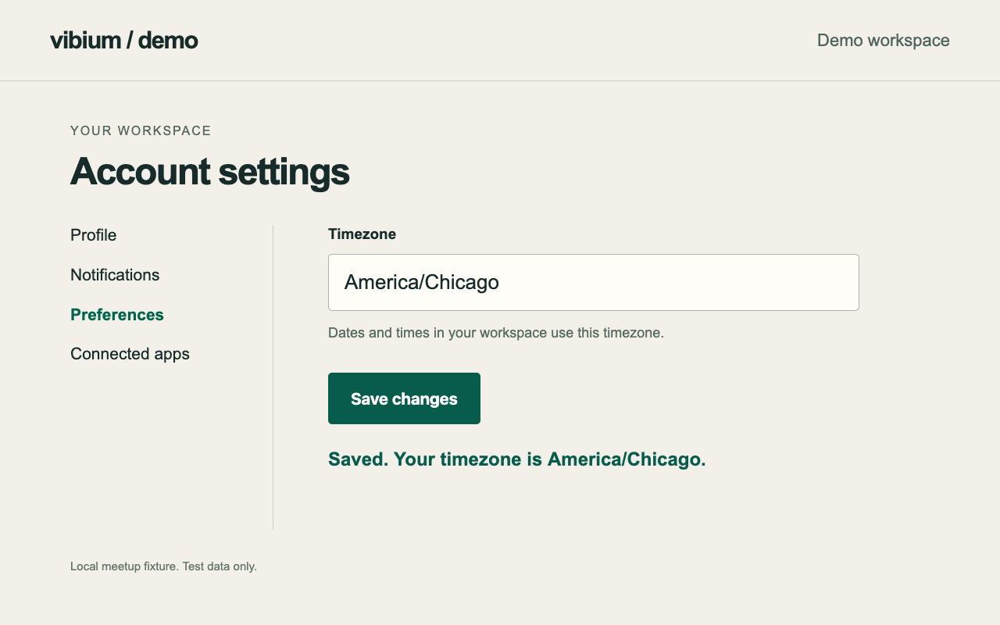
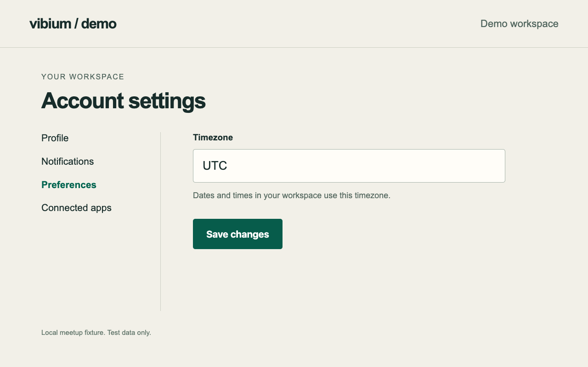
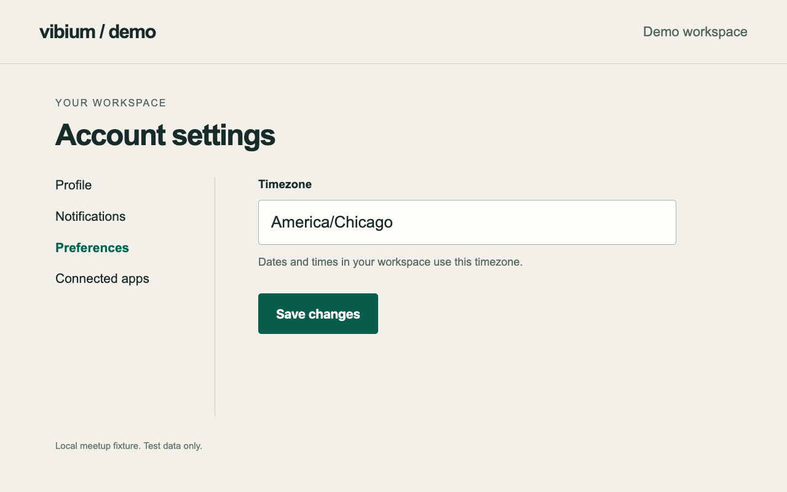
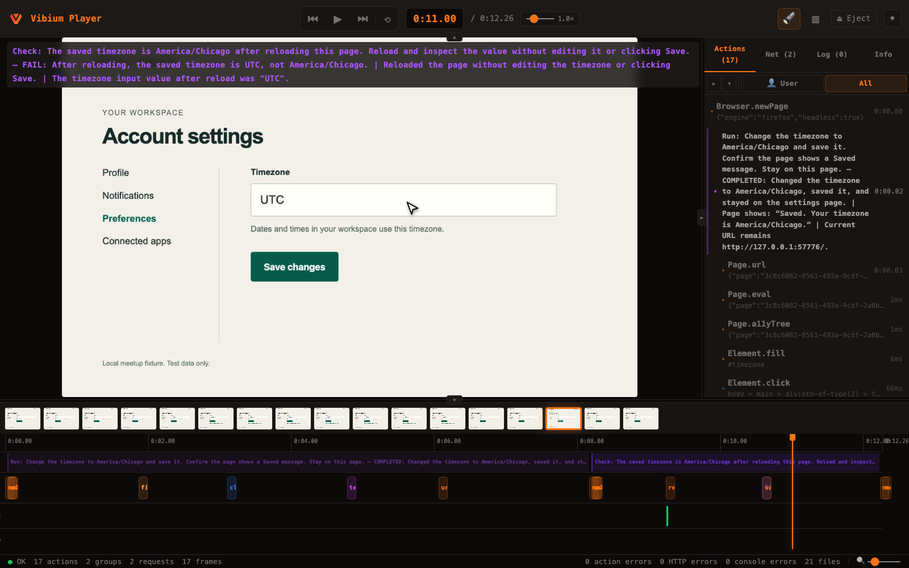

A technical meetup talk · Developers & testers
Run. Check. Give the browser a goal.
Code · Browser · Evidence
Opening · 45 seconds This is a 15–20 minute talk about two browser primitives. Run attempts a goal. Check assesses a claim. The demo uses a deliberately broken local account page, real OpenAI calls, and native Firefox video.
These slides describe the current development build of Vibium. Confirm the installed version exposes these commands before the meetup. The demo is an illustration, not an accuracy benchmark.
The problem
A “Saved” message can hide a bug.

Actual demo browser, immediately after Run. GOAL
Change the timezone.
COMPLETED
The visible steps succeeded.
Did the timezone
Motivation · 60 seconds Ask the room what they would check next. The page did everything the literal goal requested: it accepted the timezone and displayed Saved. Its default mode deliberately omits persistence. This is why the stronger acceptance claim matters.
Run did not prove persistence, and this example is not evidence that Run is defective. The task and the acceptance criterion have different scopes.
Source: bundled actual model results and fixture implementation .
The interface
Two primitives. Two contracts.
Run a goal “Change my timezone
vibium run "<goal>"
vibium "<multiword goal>"COMPLETED / NOT_COMPLETED
Can act, inspect, and change the page.
Check a claim “The saved timezone is America/Chicago
vibium check "<claim>"PASS / FAIL / INCONCLUSIVE
Collects evidence and assesses the claim.
SDK shorthand: vibe(goal) is vibe.run(goal). Both operations return evidence.
Contracts · 60 seconds Both are model assessments. COMPLETED is not proof, and PASS is not proof. INCONCLUSIVE means the evidence is insufficient; it is useful to preserve that distinction instead of forcing a binary answer.
Check can interact with a live page. It is not a general read-only browser sandbox, and it does not roll back state. Archive verification is read-only. Operational failures are errors, separate from model outcomes.
Sources: Run guide ; Check reference .
Why independent verification?
Fresh conversation. Preserved browser.
A separate inference context No inherited builder or Run conversation. Verifier-specific instructions and constrained tools. A claim to investigate, with new observations. The same browser session Same page, cookies, login, and current state. No reconstruction of what the builder saw. Evidence from the application under test. A second assessment can challenge the first story.
Same provider or model is allowed. Fresh context does not make errors statistically independent.
Independence · 90 seconds The builder knows its plan, patches, and explanations. A fresh verifier is asked to investigate a claim using browser evidence rather than continue that story. That removes inherited conversation as one source of anchoring.
The boundary is conversational, instructional, and tool-based. It does not remove shared model biases, ambiguous claims, correlated failure modes, or misleading application content. Using another provider might help on a particular workload, but this talk presents no comparative measurement.
Do not oversell the word independent. Check can still be wrong, and both models can miss the same bug. Use it where a new investigation adds information.
Source: How Run and Check work .
Architecture
The model loop lives in Vibium.
CLI / SDK / MCP A goal or claim enters the existing runtime.
vibium:run.run
vibium:check.runVibium runtime Fresh context → provider → constrained tool request → dispatch → observation.
Existing browser Vibium operations use the same WebDriver BiDi connection and selected session.
No second browser automation stack.
The recorder groups model-driven browser actions beneath the parent operation.
Architecture · 90 seconds The vibium-prefixed commands are Vibium extension commands handled by the runtime. They are not new standard browser-native WebDriver BiDi commands, and Chrome or Firefox does not execute a language model. The runtime calls the provider, validates the selected tool, and dispatches existing browser operations.
The provider sees a constrained tool schema, not the general CLI, shell, filesystem, or an unrestricted script executor. Some recorded internal actions include page.eval because fixed observation handlers use that operation internally; this does not mean arbitrary model-authored JavaScript is permitted.
The same semantic parent names make Run and Check visible in Playwright-compatible recording data. There is no new client/runtime transport.
Source: How Run and Check work .
First use
Install. Configure. AI readiness.
npm install -g vibium
vibium check --help
vibium run --help
source ~/.config/vibium/ai.env
vibium readyUse a build with these commands. For this source checkout, the CLI is ./clicker/bin/vibium.
Private environment file · keep outside the repo
export OPENAI_API_KEY='your-key'
export VIBIUM_AI_PROVIDER=openai
export VIBIUM_AI_MODEL=gpt-5.6-sol
export VIBIUM_AI_REASONING_EFFORT=noneRun and Check share AI defaults.
Setup · 75 seconds Use the installation instructions for the build you are demonstrating. This deck covers a development build and does not assert that every public npm release has these features. Check command help before presenting. The displayed model is the one used in the recorded demo; choose a model your account can access.
Put real credentials only in a private file outside the repository, with permissions 600. The example key is a placeholder. Vibium does not automatically load this file. Source the file in the same shell that runs the CLI. export makes a variable available to child processes.
Readiness checks browser executable files without launching a browser and makes a small provider tool round trip, so API charges can apply. Browser startup, connectivity, and application correctness remain untested. Never paste real keys into an agent prompt or slide.
Sources: AI setup tutorial ; provider settings ; readiness reference .
The first command
Start with one claim.
vibium check \
"https://var.parts is up"vibium check \
"https://var.parts is up" \
-o sitecheck.zipA standalone run closes the browser it starts. An existing browser stays open.
Add --keep-open to preserve a new browser.
Earlier PinThing capture; the commands use var.parts. A site-up check is a narrow smoke check, not coverage of the whole product. First command · 60 seconds The appeal is a low-friction investigation: give a URL and a small claim, inspect the verdict, then add -o when evidence should be saved. The screenshot is an earlier PinThing capture; the commands now use var.parts. It is not evidence from running those commands or a claim about current availability.
For a fixed uptime requirement, a deterministic HTTP or browser monitor is usually cheaper and easier to interpret. A model check is more interesting when the visible behavior or investigation is less prescribed. Make vague claims more specific as the requirement becomes clearer.
Chrome records screenshots and browser actions. Native continuous WebM is currently available with Firefox 154+. New output paths are required; Vibium does not overwrite existing recordings.
Source: first check tutorial .
Demo · controlled local account page
A goal, then a stronger claim.
node demo/server.mjs
vibium go http://127.0.0.1:4177
vibium run "Change the timezone to America/Chicago and save it.
Confirm the page shows a Saved message. Stay on this page."
vibium check "The saved timezone is America/Chicago after reloading
this page. Reload and inspect the value without editing it or clicking Save."The claim names the state, the intervention, and the boundary.
Demo setup · 60 seconds Run the server from the presentation folder. A prior go command creates a browser that subsequent commands preserve. Use the same named session if you choose one. Run stop when the workflow is finished.
The actual recorded runs used this fixture on an automatically selected localhost port, Firefox, and explicit provider/model overrides. The commands on the slide use the fixed demo server port for convenient reproduction.
The no-editing instruction matters: the verifier should test persistence, not make the claim true by repairing the form. It narrows intent; it is not a substitute for the runtime's tool policies or for using safe test data.
Source: capture script ; exact prompts and results .
Real run · OpenAI · gpt-5.6-sol · Firefox
The timezone does not persist.
Play the broken demo video

12 seconds · silent browser capture · normal speed RUN
COMPLETED
The page displayed “Saved.”
CHECK
FAIL
Reload restored
Play the first video · 60 seconds Start playback. Run fills the field and clicks Save. Check starts a fresh model conversation around 8.3 seconds into this recording, reloads the page, and reads the field value.
There is no narration in the media. Explain the pause as model time, and point out the timezone returning to UTC. The video is native Firefox WebM, also transcoded to H.264 MP4 for broad playback compatibility. It has not been sped up.
Source: original recording ; actual result .
What makes the verdict useful?
The evidence answers the claim.
Actual browser state after the verifier’s reload. FAIL · ACTUAL RESULT
“After reloading, the saved timezone is UTC, not America/Chicago.”
Observed value:UTC
Expected value:America/Chicago
Evidence · 60 seconds This is a stronger artifact than a bare FAIL. It connects a particular action—reload—to a specific observation that contradicts the claim. A developer can reproduce the failure and a reviewer can inspect the browser record.
This demo's field value is also easy to assert deterministically. That is intentional: the bug is obvious to the audience. The extra value of a model loop is more situational when it must find its way through an unfamiliar interface or interpret a less rigid observation.
Source: exact summary and evidence in demo-results.json .
Controlled comparison · persistence enabled
Same claim. Now it survives reload.
Play the fixed demo video

13 seconds · same prompts · /?persist=1 COMPLETED → PASS
The fixture now writes the timezone on Save and reads it on load.
localStorage.setItem(
"meetup-timezone",
timezone
);Simplified excerpt of the persistence fix.
Play the second video · 60 seconds The fixed mode adds localStorage persistence; it is not a backend account system. Fresh browser sessions keep the two demo runs isolated. Both runs use the same literal Run goal and Check claim, with the same provider and model.
The second run passes because the observed timezone survives reload. One fail/pass pair on a purpose-built fixture does not establish a reliability rate. The two durations are demo timings, not latency promises.
Sources: fixture ; fixed recording ; model results .
Recording
A result you can inspect.

Actual broken run in Record Player. Parent intent.
vibium --engine firefox go \
http://127.0.0.1:4177
vibium record start \
--video -o flow.zip
vibium run "<goal>"
vibium check "<claim>"
vibium record stopUse Firefox 154+ for native WebM. Chrome captures screenshots and actions.
Recording · 90 seconds This screenshot is the real local Record Player, with the Check parent selected, not a mock UI. The parent carries the claim and verdict. Its children show the browser work that led to that verdict.
Start recording after opening the application and keep a single session through the workflow. If a Chrome session is already running, stop it before starting the Firefox example. The full demo capture script adds snapshots, video size and frame rate for presentation quality. The shorter commands show the everyday workflow.
For one operation, -o creates its recording. If recording is already active, -o exports the current chunk and leaves the ongoing recording alone; that export has no continuous video. Use record stop to finalize the complete continuous recording.
Public provider/model settings and limits are recorded, but credentials and endpoint URLs are not put into modelConfig. Inspect artifacts before sharing them.
Sources: original record ; recording behavior and privacy .
After the run
Ask a question of saved evidence.
vibium check \
"The timezone is America/Chicago after the recorded reload" \
--input flow.zip \
--report verdict.jsonWhat it does Reads the captured timeline, actions, snapshots, and available evidence.
Vibium recording or Playwright trace · format version 8
What the verdict covers The recorded run.
It does not launch or replay a browser, and cannot establish the application’s current state.
Missing evidence should lead to INCONCLUSIVE.
Archive verification · 75 seconds This is useful for post-run triage, reviewing a teammate's reproduction, or reassessing saved evidence under a clearer claim. An archive cannot reveal facts it never captured.
-i / --input reads an existing ZIP; -o / --output creates a live recording. They cannot be combined. --report saves structured verdict JSON and can accompany either mode. The old --record and --trace input flags are not used.
Version 8 refers to the trace format, not the Playwright package version. The report file holds the inner result object, so its status is at the top level. JSON stdout has a result envelope.
Source: saved recording support .
Working with a coding agent
Put it in the development loop.
01 / BUILD
Change the code Give the coding agent a clear acceptance criterion.
02 / EXERCISE
Run the flow Ask it to use Vibium CLI against the running app.
03 / CHALLENGE
Check the claim A fresh context inspects the resulting browser state.
04 / REVIEW
Read the evidence Fix, rerun, and add stable regression coverage.
"Use Vibium CLI. Change the timezone, then verify that it survives reload.
Save the recording. Show me the verdict and evidence before declaring done."When configured in your agent: /browser for browser work and Run · /check for independent verification.
Agent workflow · 75 seconds The human mainly installs Vibium, configures the model, and instructs the coding agent to use the CLI. The coding agent can handle navigation and individual actions, or delegate a browser goal to Run. Run is optional; Check can follow hand-written browser commands too.
Slash commands are coding-agent skills, not Vibium CLI flags. Their availability depends on the agent and skill installation. Use /browser for browser automation and Run, and /check for an explicit acceptance claim and evidence review.
Source: coding-agent tutorial ; repository skills/check and skills/browser.
When it earns its cost
Choose the right tool for the question.
Run “Get me to the checkout with one battery pack.”Useful for goal-driven exploration and unfamiliar flows.
Check “The empty search state explains how to recover.”Useful for an evidence-based check that needs interpretation.
Assertion “The saved field value equals America/Chicago after reload.”Prefer deterministic checks for stable, precise invariants.
Saved evidence “Did this recorded run show the expected confirmation?”Useful for triage and review without rerunning the application.
Tradeoffs · 90 seconds It is reasonable to ask whether Check is pointless for a simple known assertion. Sometimes it is: a conventional assertion can be faster, cheaper, repeatable, and easier to maintain. The demo uses a simple invariant so the audience can judge the result directly.
The feature is more compelling when investigation itself is work: unfamiliar UI, exploratory behavior, an agent's claimed completion, or a user-facing condition that needs interpretation. Even then, define the claim and inspect the evidence.
Avoid turning every assertion into a model request. Keep unit tests, integration tests, and deterministic browser tests. Model calls add latency, cost, and variance.
Source: when independent verification helps .
For automation
Gate on the verdict, not exit zero.
JavaScript · existing Page const action = await page.run(
"Save America/Chicago as my timezone");
if (action.status !== "completed") {
throw new Error(action.summary);
}
const check = await page.check(
"America/Chicago persists after reload");
if (check.status !== "passed") {
throw new Error(check.summary);
}CLI · inspect JSON stdout vibium check \
"The timezone is America/Chicago after reload" \
--json > check.json &&
jq -e '.result.status == "passed"' \
check.jsonPASS, FAIL, and INCONCLUSIVE all exit 0 when the check completes.
Execution errors exit 1. A non-PASS should follow your chosen review or failure policy.
Integration · 60 seconds The Page object is already connected to the application's browser in this excerpt. SDK calls preserve the caller's browser ownership. Async and sync interfaces are available across supported languages; the example uses async JavaScript.
The CLI ok field describes operation completion, not claim truth. The jq command makes a non-PASS fail the shell check. It also avoids parsing human-oriented text. The --report file differs: it contains the inner result, so use .status on a report file.
For production gates, choose an explicit policy for inconclusive results rather than silently treating them as a pass.
Sources: Run API ; results and exit codes .
Provider selection & evals
Make provider choices explicit.
vibium check "The saved timezone survives reload" \
--provider openai \
--model gpt-5.6-sol \
--base-url https://api.openai.com/v1 \
--reasoning-effort nonePer-call overrides Same flags on Run and AI readiness.
Adapters: OpenAI · Anthropic · Google Gemini
For a useful comparison Reset the fixture. Keep the claim and conditions fixed. Repeat runs. Compare verdicts, evidence, latency, and cost.
A different model is an experiment, not a guarantee.
Providers and evals · 60 seconds Per-call settings are useful for controlled evaluations and do not mutate environment defaults. Switching provider clears inherited model, endpoint and reasoning settings; explicitly supply the new model. Same-provider overrides retain omitted shared defaults. Credentials still come from the provider's environment variables, not CLI key flags.
The local alias uses an already running compatible server; Vibium does not install or start llama.cpp. Native Anthropic and Google adapters and compatible/local paths have deterministic tests. Real-provider acceptance for Anthropic, Gemini and llama.cpp remains pending in this development checkout. The demo in this deck uses real OpenAI only.
Use AI readiness for each configuration. Avoid assuming all models support the same tool, image, or reasoning options.
Source: model provider reference .
Limits worth designing around
Keep the boundaries visible.
Uncertainty & budgets Models can miss bugs or misread evidence. 24 selected actions and a three-minute model budget. Insufficient evidence is INCONCLUSIVE; execution failures are errors. State & privacy Live operations can change the page. They do not undo actions. Browser observations go to the selected provider. Use test data. Inspect recordings before sharing. Constrained tools and redaction reduce exposure. They are not a blanket safety guarantee.
Boundaries · 75 seconds The tools intentionally expose a subset of existing browser operations. That is useful containment, but page content can still mislead a model. Use a test environment appropriate for the actions being requested. Check retains stricter password-field restrictions; Run can enter explicitly supplied test credentials.
Recorder-wide known-secret redaction and recognized-sensitive-field visual suppression are implemented. Do not interpret that as detection of every unknown secret in every screenshot. Model requests and saved artifacts deserve a deliberate data boundary.
At the action limit, Check can return INCONCLUSIVE and Run NOT_COMPLETED. Timeouts and provider/browser failures are operational errors, not application verdicts.
Sources: limits and privacy ; Run boundaries .
Take it back to your team
Make the claim.Show the evidence.
Run helps do the work.Check checks a stated outcome.
Keep deterministic tests where they fit.
Close & questions · 45 seconds Invite a concrete claim from the audience. Tighten it together: which state, after what action, with what evidence? Then discuss whether an assertion, Run, Check, or saved-evidence review is the best fit.
Avoid promising that a model proves correctness. The closing question asks what evidence would actually justify the claim? The portable deck includes the fixture, capture script, original archives and exact results so attendees can inspect the example.